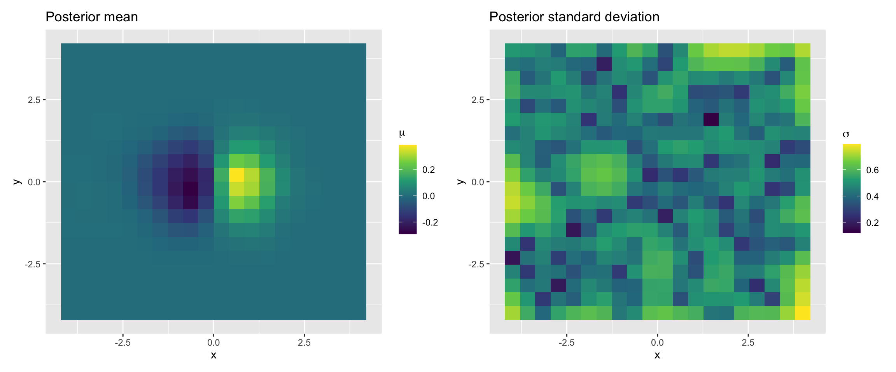

library(tidyverse)
library(patchwork)
library(lhs)
library(plotly)
set.seed(123)
eps <- sqrt(.Machine$double.eps)
# Our target function
# x is an N x 2 matrix
f <- function(x) {
x[, 1] * exp(-x[, 1]^2 - x[, 2]^2)
}
# x_i and x_j can be vectors or scalars
rbf <- function(xi, xj, alpha = 1, rho = 1) {
alpha^2 * exp(-norm(xi - xj, type = "2") / (2 * rho^2))
}
k_XX <- function(X, err = eps) {
N <- nrow(X)
K <- matrix(0, N, N)
for (i in 1:N) {
for (j in 1:N) {
K[i, j] <- rbf(X[i, ], X[j, ])
}
}
if (!is.null(err)) {
K <- K + diag(err, ncol(K))
}
K
}
k_xX <- function(x, X) {
N <- nrow(x)
M <- nrow(X)
K <- matrix(0, N, M)
for (i in 1:N) {
for (j in 1:M) {
K[i, j] <- rbf(x[i, ], X[j, ])
}
}
K
}
# Training dataset: D = (X, Y)
X <- randomLHS(100, 2)
X[, 1] <- -4 + 8*X[, 1]
X[, 2] <- -4 + 8*X[, 2]
Y <- f(X)
# Test points: Z
x <- seq(-4, 4, length.out = 20)
Z <- expand.grid(x, x) |> as.matrix()
K_XX <- k_XX(X) + diag(eps, nrow(X))
K_ZX <- k_xX(Z, X)
K_ZZ <- k_XX(Z)
m_post <- K_ZX %*% solve(K_XX) %*% Y
s_post <- K_ZZ - K_ZX %*% solve(K_XX) %*% t(K_ZX)Modelling two variables using GPR
Dr. Gramacy’s textbook, Surrogates (Gramacy 2020), particularly chapter 5, was very helpful in putting together the code for this simulation.
results <- as_tibble(Z) |>
rename(x = Var1, y = Var2) |>
mutate(z_m = as.vector(m_post), z_sd = sqrt(diag(s_post)))
p1 <- ggplot(results, aes(x, y, fill = z_m)) +
geom_tile() +
scale_fill_viridis_c(name = expression(mu)) +
labs(title = "Posterior mean")
p2 <- ggplot(results, aes(x, y, fill = z_sd)) +
geom_tile() +
scale_fill_viridis_c(name = expression(sigma)) +
labs(title = "Posterior standard deviation")
p1 | p2
plot_ly(z = ~matrix(f(Z), ncol = 20)) |> add_surface()plot_ly(z = matrix(results$z_m, ncol = 20)) |> add_surface()References
Gramacy, Robert B. 2020. Surrogates: Gaussian Process Modeling, Design and Optimization for the Applied Sciences. Boca Raton, Florida: Chapman Hall/CRC. https://bookdown.org/rbg/surrogates/.